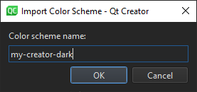

Change editor colors
You can select one of the predefined color schemes for the text editor or create customized color schemes.

To create a color scheme:
- Select Preferences > Text Editor > Font & Colors > Copy.
- Enter a name for the color scheme and click OK.
- In the Foreground field, specify the color of the selected code element or message.
- In the Background field, select the background color for the code element or message.
The background of the Text element determines the background of the code editor.
- In Font, select Bold or Italic to format the text of the selected code element or message by making it bold or italic.
- In Underline, select the color and style to use for underlining code elements or messages.
When you copy code from Qt Creator, it is copied in both plain text and HTML format. The latter makes sure that syntax highlighting is preserved when pasting to a rich-text editor.
Export and import color schemes
To share color schemes with others, export and import them as XML files. To export a color scheme, select Preferences > Text Editor > Font & Colors > Export, and then select the filename and location for the XML file.
To import a color scheme, select Import, and then select the XML file to import. In the Import Color Scheme dialog, enter a name for the color scheme in Color scheme name:

When you select OK, the color scheme is added to the list of color schemes in the Font & Colors tab.
See also Behavior and Font & Colors.